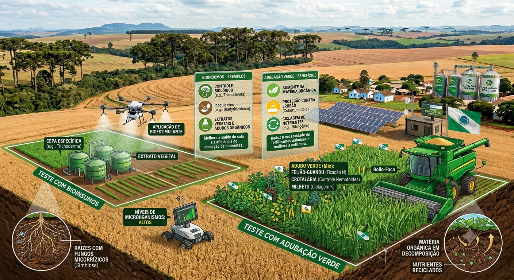
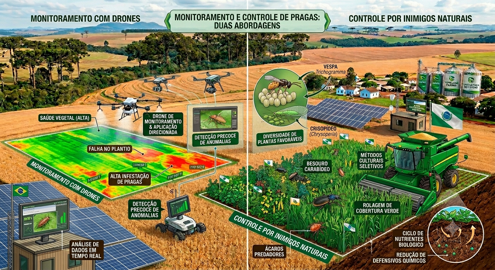
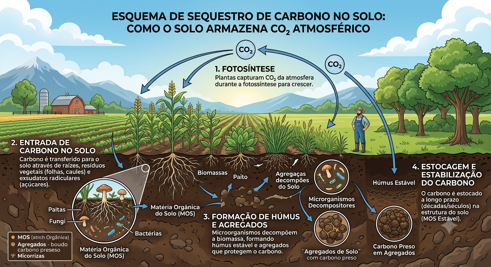

Nossa Proposta - Agrinho 2026
A agricultura paranaense é uma das mais fortes do mundo, e a nossa proposta para o Agrinho 2026 é mostrar que é possível produzir muito, gerar riqueza e, ao mesmo tempo, cuidar da nossa terra. Este site foi criado para conectar as pessoas da cidade com a realidade moderna do campo. Queremos mostrar que o agricultor de hoje é um grande aliado do meio ambiente, utilizando tecnologia de ponta para garantir que a comida chegue farta e saudável na mesa de todos os brasileiros.

Como o controle de pragas ajuda a aumentar a produtividade? A comida não fica intoxicada?
Imagine uma planta de soja ou de milho como se fosse um atleta se preparando para uma maratona. Para dar bons frutos e grãos pesados, essa planta precisa de 100% da sua energia focada no crescimento. Quando uma lagarta ou um fungo ataca, a planta gasta toda a sua energia tentando sobreviver e se curar. Ao fazer o controle de pragas de forma correta, o produtor age como um "médico" da lavoura, protegendo a planta para que ela possa produzir o máximo possível, o que garante colheitas recordes e comida abundante para a população.
Agora, sobre o medo de a comida chegar "intoxicada" ou venenosa na nossa mesa: isso é um grande mito! Quando um produtor precisa aplicar um defensivo agrícola, ele não faz isso de qualquer jeito. Ele segue uma receita feita por um engenheiro agrônomo (como uma receita médica). Além disso, existe uma lei chamada Período de Carência. É um tempo obrigatório que o agricultor deve esperar entre a aplicação do produto e o dia da colheita. Durante esse tempo de espera, o sol, a chuva e a própria natureza degradam o produto. Quando o alimento vai para o supermercado, ele está limpo, testado e totalmente seguro para consumo.
Adubos, fertilizantes e alternatives naturais: Como substituir os agrotóxicos?
A grande revolução que está acontecendo nas fazendas do Paraná neste exato momento atende pelo nome de Bioinsumos. Durante muito tempo, dependemos de produtos químicos agressivos, mas os cientistas descobriram como usar a própria natureza a nosso favor.
- Inoculantes Bacterianos: Em vez de jogar toneladas de adubo químico no solo, os produtores misturam as sementes com bactérias naturais "do bem". Quando a planta cresce, essas bactérias puxam o nitrogênio que está solto no ar e entregam diretamente na raiz da planta.
- Fungos Protetores: Fungos como o Trichoderma funcionam como "soldados de defesa". Eles destroem as doenças do solo antes mesmo que essas doenças consigam encostar nas raízes das nossas plantações.
- Adubação Verde e Compostagem: Plantar aveia ou braquiária e depois deitá-las sobre o solo vira uma esponja que segura a água da chuva e vira um banquete de nutrientes naturais para a próxima safra.

Como um produtor descobre que a plantação está doente e o que ele faz para salvar?
A identificação começa lá do alto: os produtores utilizam drones modernos equipados com câmeras térmicas e sensores de cores. O drone sobrevoa a fazenda e manda um mapa direto para o celular do agricultor.
O diagnóstico é visualizado logo em seguida: folhas esbranquiçadas indicam ataque de fungos; folhas comidas mostram que há lagartas; e plantas murchas podem indicar falta de água. Sabendo o ponto exato onde está o problema, o agricultor não precisa pulverizar a fazenda inteira! Ele vai apenas naquela mancha específica e aplica a solução, como liberar minúsculas "vespinhas" criadas em laboratório que destroem os ovos da praga de forma cirúrgica e 100% natural.

Estratégias de Manejo Sustentável (MIP)
A transição para uma agricultura mais verde exige muito estudo e dedicação através do Manejo Integrado de Pragas (MIP):
- Rotação de Culturas: Uma praga que ataca a soja geralmente não gosta de milho. Então, o produtor altera o que planta a cada estação, deixando a praga sem comida.
- Plantio Direto na Palha: Em vez de arar a terra, o produtor deixa a palha da colheita anterior forrando o chão, como um cobertor. Isso mantém a umidade e cria a "casa" perfeita para minhocas que deixam o solo rico.
- Manejo Integrado de Pragas (MIP): O produtor aprende a conviver com a natureza. A presença de uma joaninha na lavoura é motivo de comemoração, pois ela come pulgões invasores de graça!
Descarbonização: O Papel do Agro no Combate ao Efeito Estufa
Você já ouviu falar em descarbonização? Esse nome complicado esconde uma ideia incrível e urgente: reduzir a quantidade de gases poluentes (como o gás carbônico) que lançamos na atmosfera para frear o aquecimento global. E adivinhe quem é o grande herói nessa missão? O solo da nossa agricultura!
Quando o produtor paranaense utiliza as técnicas do MIP e do Plantio Direto, ele evita revirar a terra com tratores pesados. Isso faz com que as raízes das plantas e as folhas antigas fiquem enterradas, transformando o solo em uma verdadeira "esponja de carbono". Em vez de o carbono subir para o céu e poluir o planeta, ele fica guardado embaixo da terra, alimentando microrganismos saudáveis e deixando o solo muito mais fértil.
Além disso, ao trocar os defensivos químicos industriais por bioinsumos naturais, as fazendas reduzem drasticamente o uso de fábricas poluentes e o transporte rodoviário de venenos. Produzir de forma limpa significa proteger os rios, refrescar o clima e mostrar ao mundo que o Paraná lidera a produção de alimentos com foco em Carbono Zero!

monit
Mapa do Paraná
Explore o mapa do nosso estado. É nestas terras que a união entre tecnologia e natureza acontece todos os dias.
Proteja a Plantação!
Pronto para colocar as mãos na massa e ver como funciona a rotina de um agricultor tecnológico e consciente?